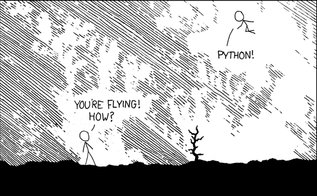
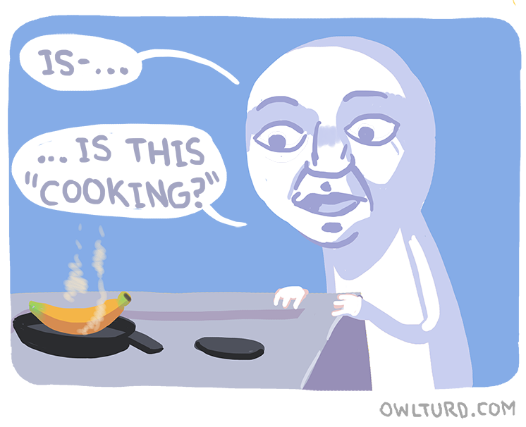
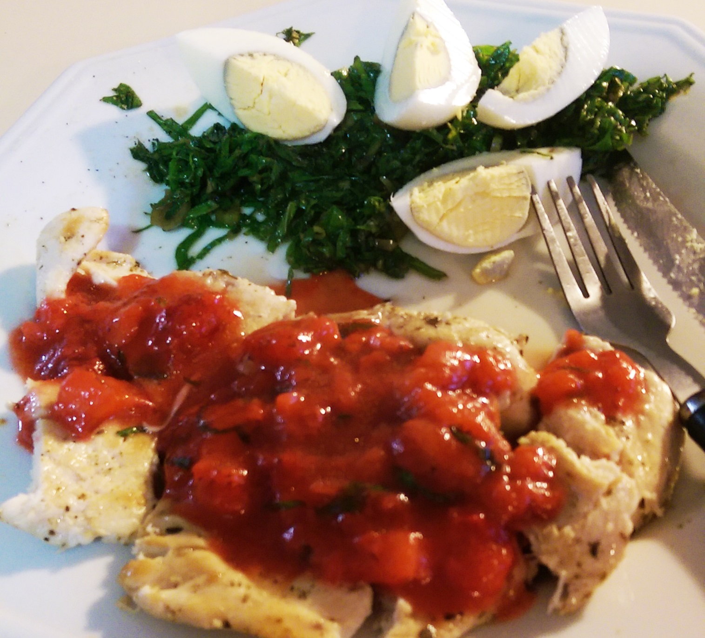
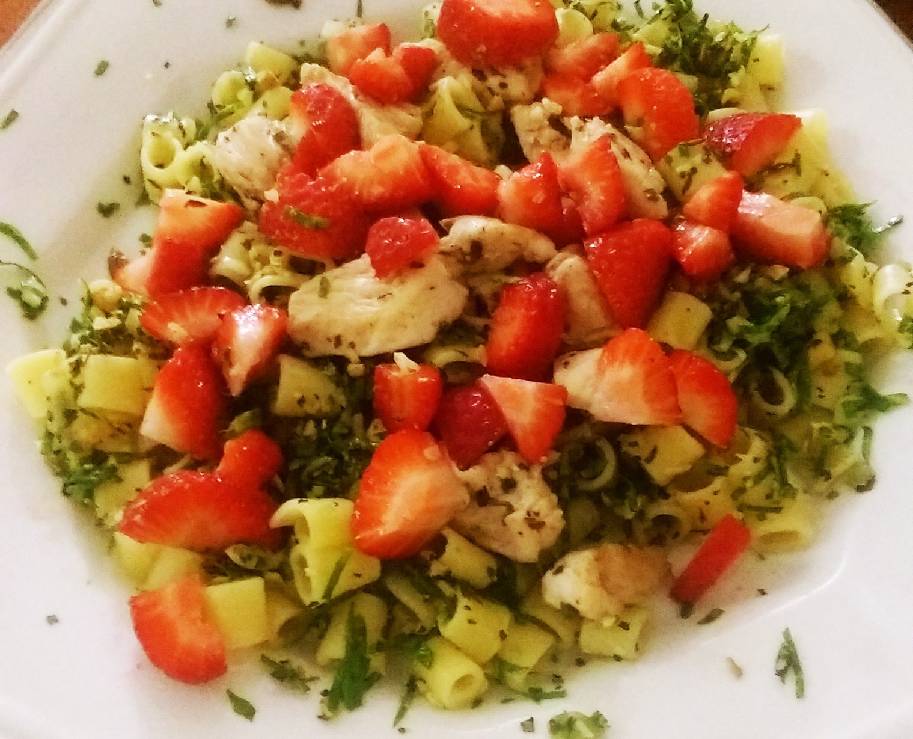
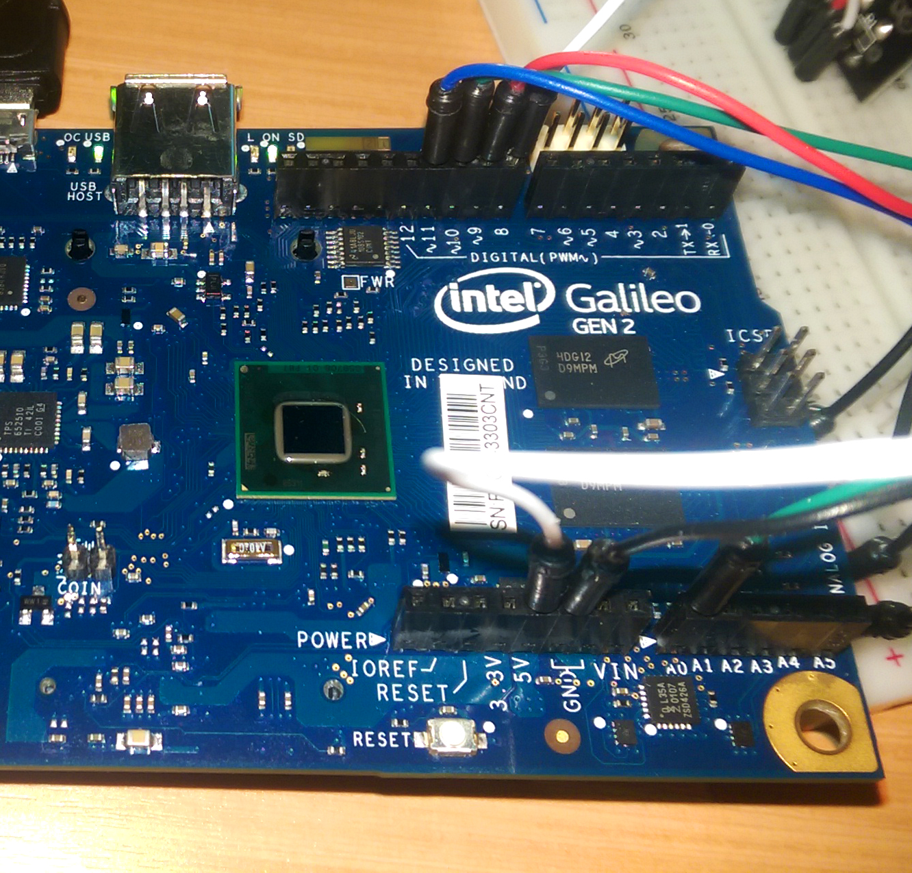
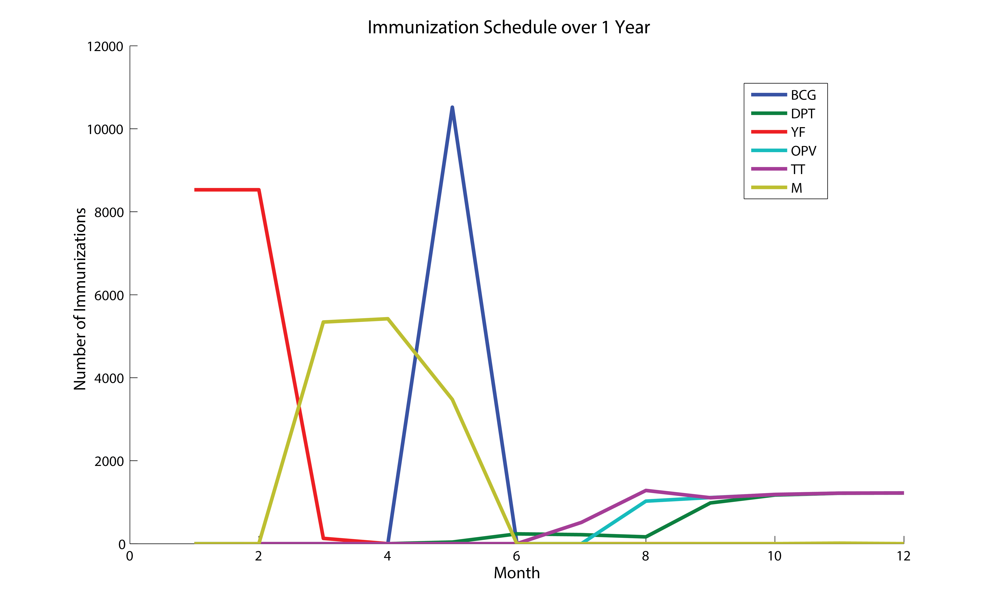
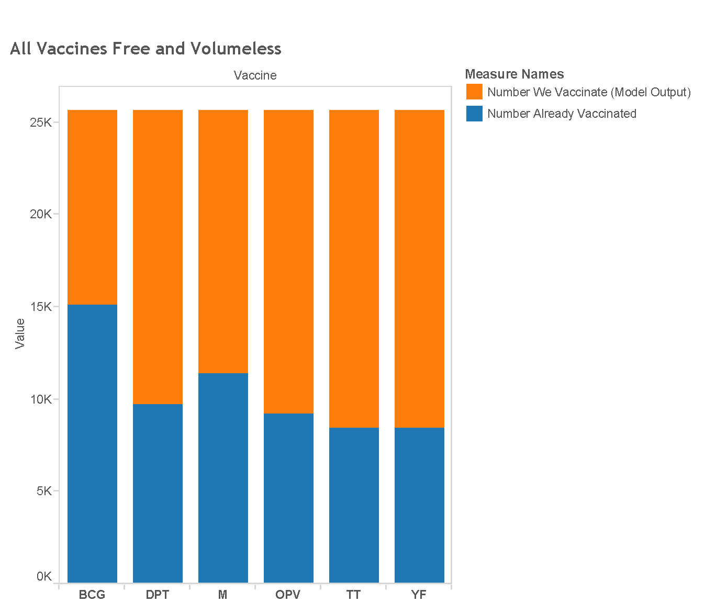
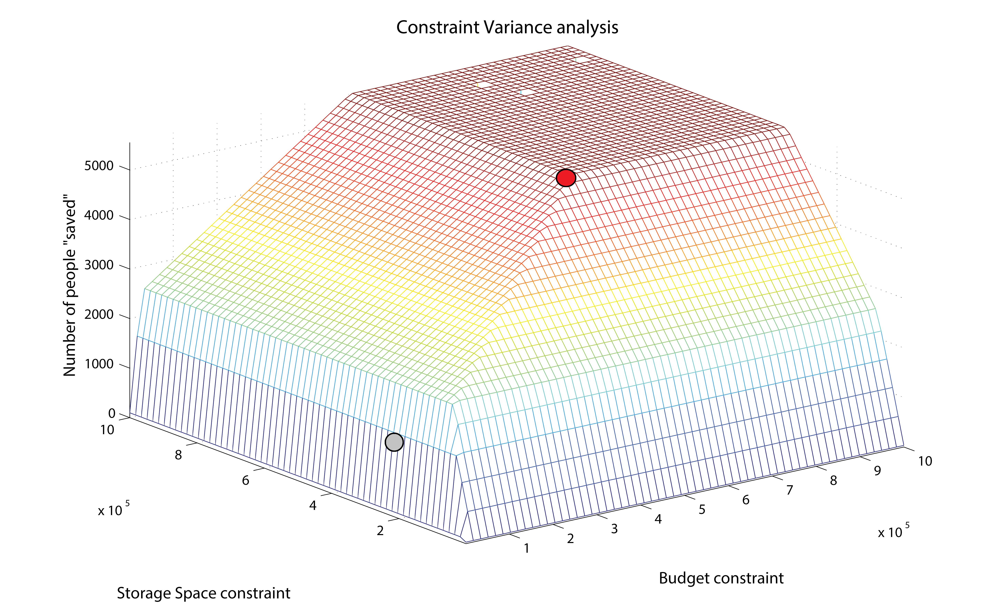

Fellow Oliner Adam Coppola and I spent a large part of our time at Insper evaluating and re-designing the computer engineering curriculum, and presenting our proposals to the faculty. This blog post will detail what we accomplished on this project.
We started the computing curriculum project by reading the document created several months before we arrived by Insper faculty. This document has the goals and frameworks for the computer engineering curriculum, including the competencies and disciplines that every computer engineer should master. Additionally, the document contains a description of every required class they plan to offer in the first seven semesters, including learning objectives, content covered, and more.
We then took this information (and translated it from Portuguese) and organized it into Trello boards. Trello was a useful tool for us because we could color-code and label classes by disciplines or competencies to see distributions across semesters, and easily drag classes around or copy-paste a board.
Within the boards, we translated the learning objectives and content as checklists under each class, and also thought about what pedagogical form the class might take. The original document listed every single class as project-based, but that is neither realistic nor desirable.
There are some classes that need to be lab-based or problem-based or discussion-based in order to get the most learning from it. Not only that, but we think that any more than three heavily project-based classes in a single semester could be intensely overwhelming for students from a workload point of view, especially as it nears the end of the semester and final-project time.
Additionally, we listed any assumptions the class might make about students who take it. These could be prerequisites, such as assuming a student who takes Software Solutions has some background knowledge of various programming languages and their contexts, or a mindset, such as assuming a student who takes Social Networks is open-minded and ready to discuss and challenge their ethics regarding computing in society.
After organizing the information, we began to analyze and evaluate the curriculum. We created a curriculum proposal document that lists our concerns about the original version of the curriculum and our proposed changes.
From there, we met with the Insper computing faculty, who were open and receptive to all of our ideas. From there, we focused on solidifying the suggested changes around the fifth semester, because that contained our most major suggested change: merging the Virtual Reality class into the Digital Games class such that we have space for an extra class on operating systems, a subject we felt was missing from the curriculum. We called this class temporarily "ThinkOS" after Olin professor Allen Downey's book which has much of the content we imagine the class would cover.
Based on this work, the next steps were to organize the fifth semester into a coordinated unit. The content in ThinkOS had previously been spread out across several classes, including Embedded Computing, Cloud Computing, and even later classes like Software Solutions and possibly even Supercomputing. Our goal was to look at the content and learning goals contained in Embedded, Cloud, and ThinkOS and separate them out into three concise classes that build off each other.
These activities spawned another proposal for the fifth semester, a document detailing our anticipated content of each course and how we imagine the classes would build off each other and possibly coordinate on projects. Asking for this level of coordination is not an easy task and would require a lot of communication of the part of the professors when they create the full syllabus for each class and actually teach them.
This document was not fully completed and we hoped that the Oliners who work at Insper in the Fall 2015 semester pick up where we left off. Specifically, there needs to be more work done in developed coordination between classes.
We believe that there is value in learning ThinkOS in conjunction with Embedded and Cloud. This value is emphasized in the imagined theme of the fifth semester: "Computing at all Layers." This theme means that the semester will cover computing from the circuits and EE level, to the low-level local OS and file systems that make a system run, to the cloud and internet and scaling your storage and processing. We believe that Embedded and Cloud will provide relevance and immediate applications of some of the concepts covered in ThinkOS.
When developing our initial curriculum proposal, we tried to analyze the curriculum from a spiral learning standpoint. The concepts driving spiral learning is to revisit concepts in different contexts as you make your journey through the curriculum.
We also tried to apply the concept of "streams and themes" to see how information travels through the curriculum. These streams would form the lines around which the curriculum spirals as they get applied in different contexts and at different chunks of the process or layer. For example, we identified that some streams might be:
- Platform stream
- Programming languages stream
- Analysis stream
- Design stream
- Ethics and context stream
These are a weird mixing of disciplines (programming, platform, analysis) with competencies (context, design) but they encompass more than that. They show how classes are tied together within learning what makes a computer work (platform), how one can make a computer work (languages), why programs work (analysis), how to make useful programs (design), and what is the impact of my designs (ethics and context). The interesting thing about these streams is that each of the first-semester classes fits as an introduction into one of these streams.
As we were leaving Insper, our proposal was in the process of getting accepted, and we hope the next Oliners at Insper will work to improve it even more.
Well, I'm not in Brazil any more. In fact, I'm in Seattle getting settled in at Microsoft, but that's a blog post for another time. No, I'm here today to do what I really should have done a week ago: finish up my reflections on Brazil and Insper.
This will likely be long, slightly rambling, and overall my raw thoughts on what it meant for me to be at Insper, how my experience changed me, and how I changed Insper. Buckle your seatbelts, folks.
Being at Insper is about being in Brazil
There's a lot more to this than just Insper. My experience in Brazil was pretty heavily defined by my work at Insper, but my work at Insper was often heavily defined by its experience in Brazil.
What I mean by this is, I can't reflect on what my work at Insper meant without also reflecting on the internationality of the experience as well, and just being in Brazil.
[stuff here about how insper is not insper if not in brazil]Some Reflections on Successes
A lot of things went well at Insper. Our goal there was to support the faculty in any way we could to help them start the new engineering program. I believe we accomplished this. We acted as course assistants for classes, planning curricula, and any number of assorted tasks.
Some Reflections on Frustrations
I learned a lot from Insper, about education and about myself. I'll be honest – there was often a lot of frustration present, and directed at all sorts of people. Often at myself, when I didn't manage my time well enough or didn't plan something quite well enough.
Sometimes, I messed around on my computer during office hours and forgot to look up and see if there were students that needed help.
Sometimes, I didn't plan one of my Galileo lessons well enough and the whole class hit a rough spot and resolving it ate away precious class time.
Nobody is perfect, but from each of these scenarios I would mentally chastise myself for not paying attention or not preparing properly. I'd store that feeling of guilt or frustration and apply it to my work later on as a motivation to do better. This is how I learn from my mistakes.
But there were other frustrations not so easily resolved. Frustrations at my teammates who didn't want to have a conversation about the best way to approach a project, or who weren't getting the work needed done.
A big one was frustrations at the Insper administration. I learned a lot about the politics of education, and sometimes it felt like often when we suggested something, it got turned down.
Even worse was when professors sought out meetings with you to ask your opinion on an assignment or project. I would give advice, make suggestions, or offer feedback, and often I felt pretty strongly about the feedback I gave (which isn't always a good thing, yes. "Kill your darlings", even your darling suggested ideas).
While the professor would seem receptive and enthusiastic about the idea at the time, I would follow up a few days later to ask how it was going, only to hear "well, I thought about it more/talked to someone else about it/revised my goals and decided not to follow through" which was not only a crummy feeling that hurt self-confidence but also, in my opinion, hurt the students because the ideas were designed to improve learning!
This could also be followed up with frustration at the administration, because often the professors would be on our side but the omni-present cloud of "this will never get approved by the business administration" prevented a lot of actual work.
And sometimes, we never even asked because there was this pessimistic attitude that if we did, it would definitely be refused, and why even try. I hate that attitude, and I never even met the administration but because of all this I had such a negative impression of them.
And my least-favorite type of frustration was the one I sometimes got with the engineering students. There were a lot of different forms on this.
I got frustrated when they cheated on assignments instead of working towards their own learning.
I got frustrated when they thought university at Insper would be just like high school, when they didn't apply themselves or work to make Insper what they wanted it to be.
But sometimes I got frustrated when I was supposed to be teaching them, and that's something I'm ashamed of, because no teacher should be frustrated towards a student.
Teaching is hard. Sometimes, the students expected to be coddled, asked me questions that the professor had just answered. They messed around on Facebook during lectures and then during exercise work time they expected me to sit next to them and re-teach it all in a personal lesson.
That behavior frustrated me and I wish it didn't, because in order to be a good teacher, it really shouldn't matter how the student learns, just that they do learn. And I don't know anything about a student's learning style – maybe they have difficulty learning from lectures and really need that one-on-one time to grok the concepts. I'm there to act as a mentor in any way I can.
The other cause of frustration was at myself, when I know I'm not explaining something properly but just can't find the right words for it to help the student.
Sometimes, I slipped up and used English slang in my explanations, which would confuse students for whom English is their second language. I remember one instance of this in particular – I was explaining something related to lists in Python, and I at one point referred to the elements of a list as "slots".
Luckily I had a student who interrupted me to ask for clarification, and I was able to rectify my mistake – students who learn English as a second language wouldn't really apply what they know of the word "slots" to elements of a list.
It was something I always had to keep in mind, because a lot of students were not at all confident in their English skills, but too self-conscious to ask for clarification.
Other times, something I would make the mistake of assuming knowledge, which I believe is something you should never do as a teacher, especially in a one-on-one help environment.
Consider this example: A student comes to me asking for help with a Prime Number Checker, and they are not sure where to start. A conversation might go like this:
| Me "Well, how do you know if a number is prime?" |
| Them: "If it has no factors other than 1 and itself." |
| Me: "And how do we know if a number has factors other than 1 and itself?" |
| Them: "If it's divisible by one of the other numbers." |
| Me: "How do we check if it's divisible by the other numbers?" |
| Them: "Use a for loop to check each one." |
| Me: "Exactly! You can loop through all the numbers you want to check, and then from there, you know how to check if your number is divisible!" |
Originally, if I looked at this conversation, I might think it was successful. I asked some questions and guided the student to figuring out a solution. But, suppose the student wasn't actually having trouble with the for loop, but instead with checking divisibility.
In my last line, with the "you know how" statement, I unknowingly invalidated their issue by implying that they should know how to do it already. And now consider that student, who is left with the choice of either asking further ("how do I check if it's divisible?") or not.
Asking would mean admitting ignorance to something I just said they should know. And for a first-year engineering student (or, a lot of people, actually), admitting ignorance is hard enough as it is, even harder if you think someone will be disappointed in you because of it.
And the student's other option is to accept the help as is, go back to work with the problem unsolved, and then get more and more frustrated until maybe they give up, or cheat off the internet, or some other unfavorable behavior.
So even if a brave student does choose to continue asking, it still deals a blow to their self-esteem and self-efficacy. Basically, both sitautions are ones we as educators want to avoid, which is why I say, never assume knowledge.
If I had just asked "do you know how to check if a number is divisible by another number?" - they would either answer "yes" and be on their way, or have the judgement-free opportunity to ask for clarification.
I'm getting off-topic here, but I swear I have a point. And this whole section wraps up to – there were a lot of frustrations at Insper, and writing them down just now has helped me, in a therapeutic way, both recognize what was going on as well as admit that nothing is perfect.
Some Reflections on Personal Growth
I recently found out about Googlewhacks, a thing it seems the rest of the world has already heard of, so I guess I'm late jumping on this ship.
Nonetheless, the "contest" intrigued me, and after a few futile attempts to search random words that popped into my head, I decided to try and automate the process so that I too could claim the fleeting discovery of a googlewhack.
Writing the scraper was easy - I used one of my favorite Python packages: pattern. It's a powerful web mining module with built-in functionality for searching Google, Wikipedia, Facebook, Twitter, and more. Using this, it only took a few short lines to implement my random Googlewhack finder:
from pattern.web import *
import random
from firebase import firebase
# create list of all possible english words
f = open("corncob_lowercase.txt")
words = list(f)
f.close()
firebase_url = "https://googlewhack.firebaseio.com/"
g = Google()
results = 2
word1 = ""
word2 = ""
# keep searching until we find a googlewhack
while results != 1:
word1 = random.choice(words).strip()
word2 = random.choice(words).strip()
results = len(g.search(word1 + " " + word2))
print word1, word2, results
# add the whack on an online firebase database
print "FOUND A WHACK:", word1, word2
fb = firebase.FirebaseApplication(firebase_url, None)
fb.put("/","whacks",word1+" "+word2)
This program depends on pattern, which you can install with sudo pip install pattern and Mieliestronk's List of English Words which you can download with wget http://www.mieliestronk.com/corncob_lowercase.txt.
The program keeps running (in theory) until it finds a whack. I later added the firebase so that if anyone who sees this here and decides to download and run it finds a whack, I'll be able to know about it. (Please, feel free!)
The downside: it turns out, Google has barriers in place to prevent scrapers from making too many search requests like this. It will only loop about 80 times until we get a 403 Forbidden Error response. It seems that the barrier only lasts about a day, though.
What does this tell us? I could try using Google's own API, which would probably allow more requests per day. But as is, I could probably search more than 80 times manually and be more likely to find a whack that with two randomly selected words. And although I have yet to find a whack, I'll write a script to automatically execute this scraper script each day and keep you updated.
I learned Python in Python 2. I found the language simple, clean, and not at all difficult to understand, having come from a high-level object-oriented language background from learning Java in AP CS in high school.
So, admittedly, when I came to Insper and found they were teaching Software Design in Python 3, at first I didn't understand. Most third-party libraries aren't even supported in Python 3! Why bother switching when Python 2 works well?
This is the story of how I learned to stop worrying and love the Python 3.
So, I did my research, and I changed my mind. It turns out, amazingly enough, that when you're well-informed about the reasonings that drive changes, you are much more open to change itself.
In fact, as a general rule of thumb, understanding reasoning behind decisions is important. As a teacher, explaining why you give a test or homework assignment drives up student feelings of relevance and with that, intrinsic motivation. And as a student or employee, people tend to resist change when they don't understand why it's taking place. Tradition is heavily rooted in today's society.
But, excusing that brief divergence, here are some of the reasons I became convinced Python 3 was in fact a better language to teach to the first-years here at Insper. There are still some cons though.
The print function
My immediate gut reaction to this change - the most glaring, obvious one - was "But why?" I'll admit, I still continuously screw it up. I get syntax errors all the time because I forget to put those darn parentheses around my print statements. It's inconvenient.
But... on the flip side, now that I'm helping teach the language, I understand why the changes were made. print is a function, after all. It makes sense to keep this consistency and explain to beginner programmers that you put parentheses after a function call with the arguments inside, instead of saying this with an "...except for print!" addendum.
Integer Division
In the new and improved Python 3, dividing two integers returns a float, and you need to use the new // operator to get the previous flooring behavior.
>>> 3/2
1.5
>>> 3//2
1
It just makes more sense. Yes, Python 2 had a staunch believe that typing should be explicit, and again makes the language more accessible to beginners. You don't need to worry about teaching the C-like floating-point division. That said, if you ever decide to move on to learning a language like C that does have that floating-point division quirk, you might have some habits from Python that are hard to break.
Also, I do have small concerns from watching the language be taught that the students don't have a complete grasp of typing their variables. This might be a separate issue, with Python instead of Python 3, because if they were learning a language like Java they would have to explicitly declare each variable's type.
Too often I see them trying to use string methods on things that are not strings, dictionary methods on things that are not dictionaries, etc. Would the explicit typing of int vs floating-point division force them to keep types in mind? Maybe. But I expect it's larger issue than int division.
input() function
I never learned the input() function back when I was learning Python (in Python 2), which I found odd, coming from Java and high school programming competitions where the first thing you did always was create a Scanner object to receive input.
Looking back, I wonder if that was due to the concerning abilities of the input() function - it tried to be helpful and guess the type of the input instead of just returning a string. This allows people to go ahead and enter a few lines of Python code that the program would then execute. Not the best plan.
In Python 3, input() now has the behavior of the Python 2 function raw_input(), which is the one that always returns a string and you should have used always anyways.
Strings are Unicode!
This is a problem I never ran into in my intro-level Python class, happily unknowingly declaring all my strings as bytes because that's how Python 2 did it.
But, teaching internationally, this was one of the main reasons that convinced me Python 3 was worth using. I have a class of 30 Brazilian students whose first language is Portuguese. They want their strings and variable names to contain Portuguese words with accents. Python 3 allows this, and Python 2 would have made it a pain in the neck. This international accessibility is a huge bonus.
These are some of the main differences, but there are so many more - bug fixes, changing bad behavior we didn't even know existed, making things simpler and make more sense. Yes, it's incredibly annoying that some of my favorite packages (*cough cough*) are not available in Python 3, and porting them is a hassle. But for teaching beginner programmers who've never touched code before, Python 3 makes for a smoother introduction than its older counterpart.
For more info on other changes between Python 2 and 3:
This blog post was written by members of the Olin community and originally published on Olin alum Mel Chua's blog.
A collaboratively written letter to the editor of the New York Times article (April 27, 2015) "How To Attract Female Engineers."
To Professor Nilsson we say: "Yes, and."
Increasing the percentage of women in engineering will better the field, expanding the kinds of work engineers do. We are professors, students, staff, and alumni from an engineering school enrolling 50% women, many in traditional fields of Electrical and Mechanical Engineering. Here students, across the curriculum, do technical engineering work embedded in social context, from designing equipment for small-scale farmers to building prosthetic fingers for a grandmother who wants to play LEGO with grandchildren.
We absolutely need more of this in engineering. But let's not accidentally create "caring enclaves" for women, where this work may be perceived as less technical (and thus easier) than traditional engineering work. We often hear that traditional engineering (i.e., male-dominated, ultra-technical, not-people-oriented) is technically more difficult. This assertion is untrue and damaging: it can lead to the expectation that the rest of engineering is fine as is. Siloing women in "caring" forms of engineering may perpetuate the very gender-based stereotypes and hierarchies that many of us work to eradicate as we battle everyday sexism in the field.
The authors of this letter are all affiliated with Olin College of Engineering in Needham, Massachusetts (faculty, staff, students, alumni).
Debbie Chachra Ingrid Hagen-Keith Caitrin Lynch Alisha Sarang-Sieminski Lynn Andrea Stein Lauren Taaffe Yevgeniya V. Zastavker Rehana Patel Sara Hendren Anne LoVerso Mitchell Cieminski Gabrielle Waldman-Fried Ellen Chisa Diana Vermilya Carmella McCormack Kari Bender Kate Maschan Eric Munsing Boris Taratutin Rebecca J. Christianson Elizabeth Kneen Kate Dramstad Mikell Taylor Carisa Rubi Leal Jessica Townsend Emily Wang Kristina Cary Sarah Waskom Joanne Pratt Meagan Vaughan Melissa Yu Rachel Mathew Chen Santillan Wang Pearl Donohoo-Vallett Maruta Vitols Jennifer Simonovich Natalie Mattison Julianna Stockton Alison Shin Ananya Kejriwal Erika Swartz Jessie Lin Suzy Hong Rachel Nancollas Jessica Anderson Mariah Dunn Tiana Veldwisch Victoria Hsiao Preeta Willemann Jessica Noglows Jackie Rose Morgan Boes Meryl Stark Kristen Dorsey Mel Chua Heena Mutha Emily Tisei Moscol Ash Walker Angela Sharer Casey Landey Kimly Do Bukky Adebayo Leah Mendelson Kendall Pletcher Gracie Sanford Rachel Bobbins Jessi Murray Sara Wheeland Jessica Donahoe Rebecca Schutzengel Kristina Raposa Sharon Breitbart Linda Canavan Molly Farison Charleen Laughlin Lawrence Neeley Rob MartelloLiving in São Paulo this semester has brought another new thing into my life: living in an apartment and cooking for myself. And as a student who would prefer to eat well without spending a lot of money, I quickly figured out how to make some excellent healthy meals from a few staple ingredients.
It costs a lot to go buy new stuff for each new recipe, so having a variety of recipes that taste diverse but use the same basic ingredients is key. I thought I'd share a few of my favorites here.
The Ingredients
These basic ingredients are in almost all of these dishes, and you should always have them ready in your kitchen. I'll try to add in the prices, which I know in Brazilian reals. As of writing this, the exchange rate is R$3 to one USD, but that might change.
- Boneless chicken breast (six pieces - R$8)
- At least two vegetables of choice - I usually prefer broccoli (R$5 per head), green beans (R$3 per bag), and carrots (R$1 per carrot)
- Shredded kale - hear me out on this one. You can eat it raw in a sandwich like lettuce, but cook it for dinner too. Also super healthy but tastes good with the right stuff. Super versatile and definitely a must (R$5 for 230g)
- Cheese - I prefer mozzarella, but anything works. Slices, chunks, whatever (R$5 for 8 slices)
- Favorite pasta - I like ditalini or penne, but your choice (R$4 for a bag)
- Onions - a must. They go in everything. I love the mini onions because it's the perfect size for one recipe without leftovers (R$6 for a bag of 15 mini onions)
- Garlic - fresh cloves or pre-crushed and dried, your choice
- Salt and pepper, and whatever other seasonings you like. I also highly recommend basil
- Olive oil
Chicken with Strawberry Sauce and Kale with Eggs

Extra Ingredients:
- Strawberries
- Hard-boiled eggs (I usually always have a tub of these around)
Here's the thing: I don't have a grill. So I "grill" my chicken on the stove, which by technical cooking terms might make it fried, but it tastes grilled. Anyways, this recipe is super easy.
Cook your chicken, with some seasoning. I have a "lemon and herb" seasoning mix that goes really well, but even just salt and pepper will work. While it's cooking, make the strawberry sauce by throwing in some chopped strawberries, some olive oil, and fresh basil and letting it cook until it is mushy and smells good.
For the kale, cook it in a pot with some olive oil and some chopped onion. Careful not to let the kale over-cook. Pour the strawberry sauce over the chicken and serve the kale with a sliced hard-boiled egg.
Baked Chicken Vegetable Casserole
Extra Ingredients:
- Tortillas (this recipe needs 2)
This recipe is so easy, and so delicious. I made one serving by layering a "bottom crust" of 1.5 tortillas on the bottom of a glass baking dish (the only one I have).
Butter the bottom of the tortillas so that it's easy to get off after it cooks. And then just toss a bunch of stuff into the casserole: chopped vegetables (beans, broccoli, and carrots work great), then some chunked chicken breast, then some cheese sliced or chunked so it spreads out. Add some chopped garlic and onions, sprinkle some salt and pepper in and maybe a drizzle of olive oil.
The final touch is to rip up that last half of a tortilla and sprinkle it around - it gets all crispy and adds some excellent texture. Mix it all up a bit and put it in the oven at about 200 C for about 30 minutes, and enjoy!
Kale Pesto

Extra Ingredients:
- Walnuts - I bought these whole because they were cheaper than pre-shelled and pre-crushed
- Strawberries - optional but a nice touch
- Parmesan cheese
- Basil - fresh or dried, just have a bunch of it
Another favorite. Start your pasta cooking, and grill up some chunked chicken on the stove. While those are cooking, mix up the pesto in a smallish bowl. Take your kale, walnuts, garlic, basil, and Parmesan cheese and and shred them in a food processor. If you are like me and don't have a food processor, this can be done by hand through extreme chopping, dicing, and shredding.
Mix the result in a bowl, adding as much olive oil as needed until it gets to the right consistency. Then, just mix it in with the chicken and pasta, and sprinkle even more Parmesan cheese on top, because why not? Serve with chopped strawberries on top for an excellent touch
Classic Stir-Fry
Extra Ingredients:
- Rice
- Soy sauce
This is incredibly easy to make, but tastes really good. Cook your rice, and in a frying pan or wok, fry up chunked chicken with the vegetables of your choice, and some garlic and chopped onion, and as they're cooking keep drizzling on some soy sauce so that they get flavored. Serve the stir-fry over the rice.
Pasta Primavera
Extra Ingredients:
- Tomato sauce
- Parmesan cheese (optional)
Another easy classic. Just cook up your pasta, and in a separate pot, cook the chunks of chicken and vegetables. As they're finishing cooking, add in the tomato sauce with chopped garlic and onions to heat them. Pour the whole thing out over your pasta and top with cheese if you want.
Apple Chicken
Extra Ingredients:
- Apples (1 per serving)
This one is just a flavored chicken seasoning, so cook your vegetables separately in your favorite vegetable-cooking method, and grill the chicken on the stovetop.
For the apple seasoning sauce, chop up your apple into as small chunks as possible. It will probably look prettier if you peel the apple, but I did not, and it still tasted delicious and was probably healthier. Then, start cooking the apple chunks along with some chopped onion and a few spoonfuls of olive oil.
Add some salt, pepper, basil, or other seasonings you have around to taste, and be sure to keep stirring pretty consistently to get the apples cooked. They also take longer to cook than you would expect. But when it's done, serve it over the chicken.
Although I didn't have any on hand, I'm certain this recipe would be even better if you added some honey mustard to the apple sauce.
Orange Chicken
Extra Ingredients:
- Orange Juice
This is another one of my experiments in fruit-based chicken sauces. This recipe is very similar to the one before it: cook up your veggies and chicken, and then heat your sauce in a separate pot.
In this sauce, I added orange juice, chopped onions, and a tad bit of butter, and some cornstarch to thicken it. This is another recipe I'm sure would be improved with honey mustard, but it was excellent nonetheless.
Bonus Recipe - Five-Ingredient Thumbprint Cookies
Without a doubt, the best cookies on a budget. They're delicious, soft, moist, and only five ingredients, three of which you only have to buy once and they last long enough for at least five batches.
Ingredients:
- About 100g (4oz) cream cheese
- One stick (about 115g) of butter
- A little over 1 cup (1 cup 3 tbsp) all-purpose flour
- A little over 1 cup (1 cup 3 tbsp) granulated sugar
- Raspberry jam
First, mix the cream cheese and butter together until they're light and fluffy. I'd recommend doing it with an electric mixer if you have one, but I didn't, and I can assure you that a wooden spoon and a little vigor work just fine.
Next, add the sugar and mix it in. Finally, add the flour, a little bit at a time, until it is fully incorporated. Let the batter chill in the fridge for at least 45 minutes, up to 2 hours.
Then, prepare your baking sheet with cooking spray or layer it with parchment paper. I had neither of these, so a fine alternative is to spread a thin layer of butter on the bottom of the pan, then dust flour on top of it.
Roll balls of dough about an inch in diameter. Then, make the divot for the jam by pressing either your thumb or the butt end of a wooden spoon into each cookie ball. Whichever you use (I do the spoon method, but your choice), just be sure to put flour on it beforehand so the dough doesn't stick.
Spoon a little bit of jam into each divot. Bake the cookies at around 190 degrees C (375F) for about 12 minutes, or until the cookies are just starting to get brown on the edges. They'll seem soft when you take them out but that's a good thing. Cool and enjoy!
One of my projects working at an engineering school at Insper was to create an Internet of Things 8-hour workshop for our first-year engineering students to get a feel for using a microprocesser and have some fun.
So we were handed our Intel Galileo boards and Getting Started kits, and started playing around, setting them up, and figuring out what activities we could come up with. The Getting Started Guide on Sparkfun was very useful but we still ran into a couple issues.
Because random internet blog posts often proved very useful in helping me, I'm putting this together so that anyone else who might need a hand can see it.
1. Download the Arduino Software for Galileo for Windows
- Download it from here
- Go to your downloads folder or wherever you saved the zip file it downloaded. Unzip it and move the folder (arduino-1.5.3) to your top-level directory C:
- Rename it Galileo to make it easy to find, or any name you want as long as it has no spaces
- Double-click the arduino.exe application to run it and make sure it starts up
Install the Device Drivers
- Connect the 5V power supply to the board, and into a wall plug
- Connect a micro-USB cable from the board to one of your computer's USB ports
- Upon connecting the board, Windows will automatically attempt to install the driver and, unsurprisingly, it will fail. We'll have to manually install the driver.
- Open up the Device Manager. (Either Start > Run > devmgmt.msc, or go to the Control Panel, select System and Security > System and click Device Manager.)
- Locate the Gadget Serial v2.4 device, under the Other devices tree. Right-click that and select Update Driver Software
- On the first window that pops up, click Browse my computer for driver software. And on the next page select Browse... and navigate to the hardware\arduino\x86\tools folder within your Arduino Galileo software installation. Then click Next.
- Click Install on the next Windows Security window that pops up. And, after a number of loading-bar-scrolls, the installation should complete and you should be greeted with a Windows has successfully updated your driver software window.
- Look back at the Device Manager, under the Ports tree now. There should be an entry for Galileo (COM #). Remember which COM # your Galileo is assigned, it'll be important for Arduino sketch uploading and the next step.
Updating Firmware
- Reboot the Galileo by FIRST unplugging the micro-USB cable and NEXT unplugging the 5V power
- Reboot by FIRST plugging in 5V power and NEXT plugging in the micro-USB cable
- Run the arduino.exe application in the software you downloaded in the first step
- Go to Tools and select Serial Port (this might take a few moments to be un-greyed out while the board starts up). Select the COM port that you saw earlier in Device Manager
- Go to Tools > Board and select Intel Galileo Gen 2
- Go to Help > Firmware Update. Click yes to proceed, and the process will begin. It will take a few minutes. Be sure not to unplug the power or USB while it is updating
- When it is done it will pop up with a Target Firmware updated successfully message
Uploading Your First Sketch
- Go to File > Examples > 01.Basics > Blink
- Make sure the Serial Port and Board are still correct
- Click the Upload button
- After the upload completes, you should see a tiny green LED blinking once per second. The LED is connected to Pin 13 and is labeled "L" directly next to the USB port on the board
Connecting to the Linux Shell
- Plug in the 6-pin serial-USB cable from the Galileo into your USB drive. Pay attention - it should be marked on your board which end is black and which is green
- Reopen Device Manager to find the COM number of the serial USB port. It will also be listed in the Tools > Serial Port menu in Arduino
- Open a Serial terminal program. You will likely have to download one off the internet. I recommend PuTTY and the Intel page recommends Tera Term - your choice!
- Open your Serial terminal program and set the COM port to the same as your serial cable and set the baud rate (speed) to 115200
- Connect, and it should open a text terminal window. Hit enter, and you will be prompted for a login. Enter root and hit enter (no password)
- You are now in the shell! Make sure it works by running a command like pwd, which should return /home/root
Testing the Linux Shell (a few Linux commands)
You can skip this if you have experience in UNIX or Linux systems
- Type pwd. This stands for print working directory and will print the path to your current location in the directory tree (in Linux, folders are called directories). This path might be the root directory (/) or a deeper directory like /home/root/
- Type cd. Without any arguments, this returns you to the root directory.
- Type ls. This lists the folders and files in your current directory. If you are in the root directory, you will see a bunch of folders. If you are in another directory, you might see files and folders or even nothing at all.
- Type cd [directory name] (pick any one of the directories that was listed when you typed ls). For example, type cd home or cd usr. cd means change directory and will move you into the directory name that you've chosen. Type pwd to show that it worked.
- Type ls to see what's in your new directory, and the cd to return to the root directory
- Try making a file! Type touch [filename].txt to create a new file. Choose any filename you want. For example, I might say touch test.txt
- Add content to your file by typing echo "Hello, World!" > test.txt. Substitute with any string of text you want and the name of your file
- Check that it worked by using the cat command to read the contents of your file. For example, cat test.txt and the terminal will print Hello, World! to the terminal.
- Remove your file by typing rm test.txt
Downloading the Bigger Linux Image (source)
- Download the image from here (It's called SD-Card Linux Image)
- When it downloads, unzip the file
- Get a micro-SD card and adapter and insert it into your computer
- Format the SD card by opening a Windows Explorer and finding the SD card (in My Computer > Devices likely)
- Right-click the card and select Format from the menu
- Make sure the File System setting is set to FAT32
- Click Start and OK Note: this will ERASE all contents on the card, so be sure to move any important files off the card first
- When it's complete, move the contents of the unzipped download onto the card. Make sure they are in the top level
- Remove the SD card from the computer and power down the Galileo by removing first USB and then power. Insert the micro-SD into the slot on the Galileo and power it back up
- Connect to the board via your Linux shell and type python into the command window. This should open a python interpreter. Your new Linux image includes Python and other programs
Moving Files to the Galileo: A Mini Python Project (source)
- Open your favorite text editor in Windows (no, Word is not a text editor. Windows come pre-installed with Notepad if you have not used others)
- Copy the following python program into your new file:
- Save it as recordTime.py You may be tempted to name this file something unique, which is fine. However, be sure NOT to name it datetime.py because it will overwrite the existing datetime python libraries and make it not work
- Connect to your Linux shell, and plug in an ethernet cable from the board to your laptop
- You need to use the utility scp to transfer files. This already exists on Mac. On Windows, download the pscp program, which can be found here called pscp.exe
- Either follow these instructions to add pscp to your windows path, or simply save the exe file in the same directory as you saved recordTime.py, or any other files you want to transfer (which is kind of bad practice but oh well)
- Open a Windows Command Prompt and navigate to the directory where you saved recordTime.py by using cd to change directories and dir to list the contents of a directory (because this is Windows, not Unix/Linux)
- In your Linux shell, type the command ifconfig to see internet connection settings. Under the eth0 (ethernet) output, on the second line, look for the phrase inet addr followed by an IP address. Note or copy this address.
- Type pscp -scp ./recordTime.py root@[YOUR IP ADDRESS HERE]:/home/root - for example, mine might look like pscp -scp ./recordTime.py root@10.201.17.231:/home/root, but your IP will be different
- When prompted, type y to store the key in cache
- This saved the file into the /home/root directory on the Galileo. In your Galileo command prompt, type cd /home/root to access this directory and ls to list the contents. recordTime.py should be listed in the contents
- Run the file by typing python recordTime.py in the command window. The program will access the current date and time and write it into a text file. Feel free to run the program a couple times
- Use the command ls again to list the contents of the directory. Now that you have run the program, you should see a file called buttonLog.txt
- View the contents of the text file with the cat buttonLog.txt command. It will show the timestamps of when you ran the recordTime program
# -*- coding: utf-8 -*-
from datetime import datetime
# Get current time, if Intel® Galileo Gen 2 is connect to internet
# It should automatically get the real time
n=datetime.now()
res=n.strftime("%d/%m/%y %H:%M:%S")
# Append time to log file located in home directory of Intel® Galileo Gen 2
f=open("/home/root/buttonLog.txt","a+")
f.write(res+"\n")
f.close()
For a Linearity II (multivariable calculus and PDEs) project in optimization, my partner and I optimized vaccine distributions to a Niger clinic in order to maximize lives saved, varying factors like the clinic's budget and the amount of cold-storage space available. Read on for a description of our work and to see the code and analysis done on the model.
The Problem
Many developing nations still use outdated vaccination schedules which do not take into account new vaccinations or supply chains. The major constraints these countries must work with are limited funds and limited amount of refrigerated storage space.
We work towards the development of a new model for vaccine distribution, by finding the optimal distribution of specific vaccines to clinics in order to minimize the number of people infected with any disease. We use Niger as the theoretical location of our model clinic and examine the sensitivity of the model to changes in our constant values to consider possible changes in our solution for other regions.
Questions
What is the optimal distribution of vaccines to minimize infected people?
Given a current budget of X and storage space of Y, how could you adjust storage space and budget minimally to achieve the greatest increase in number of people saved?
The Abstraction
- Single clinic in Niger
- Assume identical clinics
- Assume 6 vaccines
- No transportation constraints
The Vaccines (Decision Variables)
| Index | Variable Name | Vaccine |
| 1 | BCG | Bacille-Calmette Guerin (to treat tuberculosis) |
| 2 | DPT | Diptheria-tetanus-pertussis-hepatitis B-haemophilius influenza type B |
| 3 | YF | Yellow Fever |
| 4 | OPV | Oral Polio Virus |
| 5 | TT | Tetanus Toxoid |
| 6 | M | Measles |
Objective Function
Minimizing people affected directly translates to maximizing people "saved" Our objective function is then linear:
Σ vdwhere v is the amount of each vaccine and d is the percentage of the population who would get that disease
Constraints
- Cost - Sum of cost of all vaccines must not exceed a budget
- Storage Space - Each clinic has a limited cold storage space to store vaccines
- Prevent Outbreak - Over 1 year, must vaccinate at least 60% of population per vaccine
- Common Sense - Can't vaccinate more than 100% of population
Iteration One Results
Budget = $6995/mo
Storage Space = 28000 cm^3
| Variable | Number of Vaccines to Provide per Month |
| BCG | 0 |
| DPT | 0 |
| YF | 8530 |
| OPV | 0 |
| TT | 0 |
| M | 0 |
Hmm...That's Weird
Why did we get all Yellow Fever Vaccines?
| Variable | Cost Per Immunization ($) | Volume per Immunization (cm^3) | Percent of people getting disease | Cost per cm^3 | People saved per cost per cm^3 |
| BCG | 0.13 | 1.2 | 0.00174 | 0.1083 | 0.016066 |
| DPT | 29.64 | 16.8 | 0.19 | 1.7643 | 0.10769 |
| YF | 0.82 | 2.5 | 0.08 | 0.328 | 0.2439 |
| OPV | 0.84 | 4 | 0.000022434 | 0.21 | 0.0001068 |
| TT | 0.99 | 15 | 0.0000000088 | 0.066 | 0.00000013336 |
| M | 1.29 | 2.6 | 0.08 | 0.4962 | 0.1612253 |
When we analyzed the results more closely, we saw that by optimizing for "people saved" within the constraints of budget and space, we had inadvertently fixed the outcome. MATLAB's linprog function optimized this by calculating the vaccine withe the most people saved per cost per cm^3 - basically, the one vaccine that saved the most people in the most space- and money-efficient way. But this wasn't satisfactory because it doesn't make sense to order nothing but Yellow Fever vaccines when it's not even the most prevalent disease.
Iteration Two Results
We added the constraint that 60% of the population must be vaccinated for any given disease within 12 months to prevent outbreak (as defined by the World Health Organization) and got some new results:
This shows the vaccines that the clinic should purchase over the course of a year. In the first two months, we still purchase only Yellow Fever, but as the population gets vaccinated in Yellow Fever, we start buying other vaccines.
Validation, Part One - "Toy Vaccines"
We created a petri-dish version of our model with only 2 vaccines, to see how small changes in parameters impacted the final ratios. This was used a sanity check that our equations were working correctly.
Results were easy to see that they were qualitatively correct:- All parameters the same -> equal ratios
- Increase cost or storage space for one -> decreased amounts for that one
- Increase infection rate -> increased amounts of vaccine
Validation, Part Two - What if All Vaccines were Free and Volumeless?
This graph verifies that if we were to make all vaccines free and volumeless, our model would suggest that we buy enough vaccines to vaccinate 100% of the population in each disease.
Sensitivity Analysis
We decided to analysis how sensitive our results were to changing the budget and storage space of our model clinic (the initial numbers were decided through some research on existing clinics).
In this graph, the grey O represents the the current constraint levels, and the red O represents the ideal levels of each. One of the interesting results of this graph is that by using gradient descent, one can see whether increasing the budget or the storage space would result in more lives saved. Here, we can see that moving along the budget axis while holding the storage space constant would save lives more quickly.
Ideal (Red Dot) Constraints to Vaccinate EveryoneBudget = $5,090,000
Storage Space = 356,600 cm^3
| Variable | Number of Vaccines to Provide |
| BCG | 7825 |
| DPT | 15906 |
| YF | 17189 |
| OPV | 0 |
| TT | 0 |
| M | 14238 |
Work We Can Do
- Determine the optimal ratios of vaccines a clinic should provide to maximize people saved
- Determine the budget and storage space necessary to vaccinate everyone
- Determine whether increasing the storage capacity or the budget of a clinic would allow for more vaccinations
Future Work
- Include fatality rate, consider which disease is most deadly as a factor
- Model over time more precisely
- Find the effect of one vaccination changing cost on ...
- Include more constraints, such as transportation and associated costs, variance in regions, and age of population (infancy vaccines vs. adult)
My trip to Madrid was pretty life changing. The more I think about it, the more I realized how much I learned about education in a broader sense as it is applied in so many different contexts. It was an incredible experience.
For starters, the keynote speaker on the very first day gave a presentation on Massive Open Online Courses (MOOCs) and Small Private Online Course (SPOCs) and how they can be used in different combinations with live lectures to provide new and better learning experiences.
It was an interesting lecture, but even more interesting was the chance to discuss it afterwards and think critically about its validity. For example, the presenter argued for SPOCs to precede a Physics 0 course as introduction. He compared grades with the SPOC to grades without it to prove it was effective.
To us, it didn't seem very valid because he had zero student input and feedback and setup. He didn't seem to realize that there was more to learning than the "deliverable" grades from the experience.
That was a common thread I noticed through the conference, that myself and the other Olin students were often able to present a new viewpoint as undergrads that the researchers were seeking or hadn't considered. Often, presenters referred to students as "they", that is, seeing a strict dichotomy that lent itself little to really understanding the student experience.
Another moment that was pretty defining was when I sat in on Jon Stolk's and Zhenya's workshop on motivation. Because it was a workshop instead of a presentation, it was structured as a bit of lecture and then intermittent breakout sessions and discussions and activities and worksheets.
Myself and other Oliners came and dispersed ourselves at different tables, spread out to help facilitate discussion. Talking to the people at the table was so valuable as they struggled to figure out what changes they could make to encourage their students to be intrinsically motivated instead of extrinsically.
For example, one woman pointed out that her students in an intro-computer programming class had very little to no autonomy in their assignments, and that might prevent intrinsic motivation. Her first thought, as a way to increase student autonomy, was to give more flexible due dates for the pre-defined structured assignments.
I was then able, as a undergrad perspective, to suggest that a flexible due date does little to increase autonomy if the assignment is still stiff and un-personalized. I suggested that she give more flexible assignments instead, maybe structured and scaffolded but still variable enough that students can apply their learning to an assignment of mini-project that really interests them, and makes them excited to work on it.
I was surprised to hear she hadn't even thought of that. Moments like that made me feel like my input and presence was really important at the conference. We went back and forth, and she explained that in a 160-student lecture with one professor and 5 TAs, it was hard to allow individual- or group-defined assignments and make sure they all follow the learning goals for that lesson in the time they had.
It was an interesting problem to tackle and talk to her about. How could we apply autonomy in assignment subject matter to such a huge environment?
I ended up suggesting a system we used in my POE class, that is, using a forum like Google Moderator where students can post ideas for projects or assignments that follow with what they're learning. Other students can upvote and downvote ideas, so the most popular ones rise to the top. Then, students can have input into assignment design, but the teaching team has fewer ideas to wrangle and make sure they all cover the curriculum well.
She wrote down my ideas and made it clear she was going to bring them up with her teaching team. Moments like that were really empowering, seeing how my ideas and input could make a difference in the lives of students, even in a class that's thousands of miles away that I've never seen before.
I haven't even gotten to the part where my team actually presented our research. My team was Adam Coppola, myself, Cecilia Auerswald, and Doyung Lee. Cecilia and Doyung are actually spending this semester in Brazil at Insper, so seeing them in Madrid was the first time seeing them all semester. Previously, we had been practicing our presentation with them on Skype.
We had worked really hard on our presentation for over a month. We had four presenters, which was pretty much unheard of at FIE, so we really had a chance to do something new and creative. Our paper is about making teachers from learners, and investigates factors at "Celadon College" (a relatively new, small college that graduates only engineering degrees) that may influence its students and graduates to be dis-proportionally teaching-minded and have interest in going into a teaching career or activity.
Our data was based on survey responses and primarily qualitative, so we presented the important emergent themes through the use of three personas, or composite personalities. Cecilia, Doyung, and I each presented a monologue from a student point of view that was composed of quotes from the data, edited only for coherence within the monologue. Adam was the one who introduced the study, the methods, and each of use "students".
Our presentation was at 9am, in a session about Faculty Roles. The three presenters that went before us were really intriguing, with papers that all played off each other well and invoked interesting discussions. Our session chair was really good at engaging discussion during a 10-minute break we had between presenters, and that got the audience really involved and paying attention.
We went last, and I honestly don't remember too much of the actual presentation. I was focusing too hard on remembering what I had to say and saying it right. I was looking at the audience, but I wasn't seeing them.
We had prepared for some pretty tough questions, expecting people to try to poke holes in our argument. You can imagine our surprise when the first question was "When are you guys going to videotape this so I can show it to the rest of my school?" All the questions afterward were similar - they wanted to know how they could apply what we'd seen at "Celadon" to their own colleges.
That was precisely the conversation we had been trying to open up as the purpose of our presentation, and it was incredibly rewarding to see that come to life. The session chair said one thing that was really meaningful - even if we're still figuring out the translational work, the major impact of our presentation is within the impact and inspiration - showing this to that whole room of people so they can be inspired to carry it with them.
One woman came up to us afterwards and said that she had been attending FIE for 25 years, and our presentation was within the top five she'd seen of all time.
Even typing this out, it's weird to think that all this was about the presentation and paper we've worked so hard on since the beginning of last semester. The response to our presentation was overwhelming, and I've never felt so empowered that the work I've been doing has real purpose and real impact. That feeling was something I'll likely never forget.
I gained a lot of experience working at Red Hat, and most of those have to be summarized concisely into three-word phrases in order to fit on a one-page resume. So I figured I'd write a blog post with the long version of those skills.
Worked on an Agile-style sprint team
What I was trying to convey with this line was the general teamwork I did, as well as my experience with Agile techniques. My sprint team was made up of about ten people, and we were one of six teams on a larger "Application Infrastructure" team. The AppInfra team ran itself on two-week sprint cycles beginning with a sprint planning meeting and ending with each sprint team demo-ing what they had accomplished that sprint
This style of work allowed me to learn time management around focusing projects into two-week runs and public speaking when presenting my work to the entire team as a demo. In addition, our smaller subteam met every day for a scrum video call to update the team on progress we'd made, what we planned to do today, and any blockers we had. That allowed me to keep track on my projects in a daily to-do sense as well as be oriented into the larger picture of what our team was working on.
Wrote C code...
Honestly, the only C experience I had before this internship was writing code for Arduino. I learned a ton that my high school C++ classes never covered, such as pointers, memory leaks, Valgrind, debugging tools, Makefiles, and more.
...that intersects and builds off my coworkers' projects
This was based on an article I read once about preparing students for internships. It said that one of the biggest culture-shocks for CS students in industry is that for school projects, they're used to writing their own code, creating an entire project from scratch. It's been true for me.
But in industry, that situation is uncommon. You're reading code other people have written, and writing patches, or adding features that meld seamlessly with what already exists. This takes skill and practice. Reading and understanding other people's code takes different skills from composing your own. In addition, it requires writing readable, well-commented patches that follow the existing coding guidelines. My code at Red Hat was built off the code of my coworkers, and other coworkers based their projects off my code. It all fits into a larger scheme, and knowing how to write code as a piece of a whole is crucial.
Made significant contributions to the open source community
Red Hat was my first experience with open source communities and "pushing code upstream" for review and acceptance, both of which were exciting new concepts. But watching my patches get merged into the main project repository was a feeling I'll never forget.
I'm going to be honest here, my internship at Red Hat was my first true experience with writing code for Real People. That is, people besides me, maybe my professor. I'd never written code that would be distributed to the masses. Programs that would be used by a significant number of people.
There are a few things to adapt in your coding style when Writing For Many, especially if you didn't enforce these habits when you were learning:
Internationalization
I mentioned this briefly in my previous article, but you have to remember that your code output will be translated into multiple languages. Write in a way that will preserve that meaning across language boundaries and syntactical differences. That means no code along the lines of:
printf ("%s has %s point%s of karma", user, points, points > 1 ? "s" : "");Readability
This is another item that is always talked about in coding classes but not all too often enforced. Make your code readable. Use indents correctly. COMMENT YOUR CODE. Name your variables sane things and not just "thing1" and "x". Make your commit messages more informative than "update". When it's just written for you and your professor, you both know what that function is supposed to do. When someone in Europe is trying to add a feature two years from now, it won't be so clear to them.
Worst-Use-Case Scenarios: Don't Cut Corners
Recently, I was working on a feature to name deployments in OSTree. One piece of this was making sure they user-defined custom name was unique and not already assigned to another deployment, and listed in a key-value file.
Obviously, my first notion was to cycle through the key-value pairs and check if the values match. But loops are expensive. Could I do it another way?
So I thought for a bit. What if I converted the contents of the key-value file to a string, using a simple library-defined command, and then used a string utility function to check if the proposed name was contained in this long string of the whole file.
This was a bad idea, I quickly realized. If the proposed new name was "e", and you had another deployment named "red", it would register as non-unique. No good at all. Obviously, in the target use case, you'd be naming your deployments "v1.0-stable" or "wip-no-metalinks" and the functionality would be correct. But users don't behave like your target use cases. So you have to plan for every use case, and just go with the loop.
Besides, when you think about it, converting to a string is probably uses a loop anyways.
Early in my internship, I had the dilemma of choosing between two coding practices that technically had had the exact same function, but looked different. Take a look:
Option 1:
if (deployments->pdata[0]==booted_deployment)
{
default_boot_message = "";
default_instruction = "Use command 'rpm-ostree rollback' to switch defaults\n";
}
else
{
default_boot_message = " not";
default_instruction = "Use command 'rpm-ostree rollback' to make it default\n";
}
printf ("You are%s booted into the default deployment\n", default_boot_message);
printf ("%s\n", default_instruction);
Option 2:
default_boot_message = (deployments->pdata[0]==booted_deployment) ? "" : " not";
default_instruction = (deployments->pdata[0]==booted_deployment)
? "Use command 'rpm-ostree rollback' to switch defaults\n"
: "Use command 'rpm-ostree rollback' to make it default\n";
printf ("You are%s booted into the default deployment\n", default_boot_message);
printf ("%s\n", default_instruction);
Which is better? I was drawn immediately towards Option 2. Look how beautiful it is! Just two small lines of code, making use of the efficient ternary operator. Also, those two little lines showcased my incredible programming skills in knowing what a ternary operator was. It was small, concise, and got the job done. Such nice, efficient use of space!
I've since learned to sway away from that kind of thinking. I've learned that Option 1 is inherently a better choice because of a saying my dad likes to repeat. It goes something like "Code gets written once, and read a thousand times." What that means is that when coding, you shouldn't take shortcuts to make the one writing session easier. You should write in a way to make those thousand reads easier.
Because a year from now, when I look at those ternary operators, I'd have to squint for a bit, parse it in my head, and mentally set my variables to the right outcome. And then do it again. And I might do that wrong, or lose track of something, and waste time and thinking power on something insubstantial compared to whatever bug I'm tracking. Not only that, but in mentioning debugging, that ternary operator makes a small logic error a lot harder to see than when it's all out in the open under those big if/else braces.
Lesson here: write for future you, and future strangers reading your code. Be nice to them.
Of course, the trick here was, neither of these two options is better, because they both utilize inserting conditional words into a complete sentence, breaking the GNU Coding Standards' internationalization guidelines and making any kind of foreign-language translation of this program unreadable.
 I think about this situation a lot, because it's a great allegory to real life and how we're all
definitely going to do if the world ever does reach some kind of mass apocalypse.
I think about this situation a lot, because it's a great allegory to real life and how we're all
definitely going to do if the world ever does reach some kind of mass apocalypse.
The background:
At Red Hat, we have these fabulous well-stocked break rooms full of coffee, drinks, snacks, and more. One snack supplied is a basket full of tiny Hershey's chocolate bars, which as the reader may know, come in variety packs of Mr. Goodbars, Krackels, Milk Chocolate, and Special Dark.
The situation:
As I quickly observed within my first week or so on the job, software engineers are picky. They are picky in what text editors they like to use. They are picky in coding standards. And they are picky in chocolate tastes. I mean that last one literally, because software engineers at Red Hat like to pick the Special Darks out of the mixed baskets. So much so that finding a single Special Dark bar in the basket is an incredible rarity, like finding a unicorn in the parking lot instead of your car after a particularly long day, or writing some code with no bugs.
The economic avalanche:
When I first came to Red Hat, I was a casual Special Dark user.I enjoyed it occasionally, nibbling while mulling over code. But, after I had first made the realization that Special Darks were rare and precious, my behavior changed. If I saw a Special Dark in the basket, I grabbed it immediately, even if I hadn't been in the mood for one. I was practically a slightly-saner Gollum, caressing my Special Dark bar and whispering "my precious."
But that's not even the worst of it. On occasion, I would find myself in the breakroom right after it had been restocked. Right after the Special Darks had been restored to 25% of the basket population. So what did I do? I considered the options. Special Darks were a rare commodity. I could take one or two, even though I wasn't there looking for them. But, when I did want some, they would almost certainly be gone when I came back. So I did what any reasonable person would do under the circumstances. I took almost all of them and hid them in a drawer in my cube. Yes, you heard me. I hoarded the Special Darks. I created my own stash, a dragon hoard of my own brand of gold. Now I had them whenever I wanted.
I like to think that I'm not a bad person, I'm just the product of the situation. The Red Hat Special Dark Shortage is a self-perpetuating problem. Because I noticed other people taking the Special Darks, I was forced to amp up my hoarding game in order to get any. Because of me, more people were affected by the shortage I caused and the problem continues.
I'd be a terrible citizen in a real apocalypse. A meteor crashes into the Earth, things are looking dire, the President is advising everyone stay calm and wait for them to distribute even rations, and I'll be at the supermarket stocking up on canned vegetables and bottled water. Because if something is rare, I'm galvanized into every-person-for-themself mode.
The way to solve the chocolate bar problem? I don't know. If they stocked more, I would just take more. Only a full market saturation, of so many Special Darks that demand could not possibly exceed supply, would stopper that behavior. That, or waiting until my co-workers have given up on Special Darks to the extent that they are no longer so in-demand.
If you read that last sentence again in the context of an apocalypse, I'm suggesting we hoard until enough people die of starvation that it's no longer necessary.
Economics are crazy, man.
This blog post was published on opensource.com and featured on reddit and other open-source advocate sites.
This summer I started my first ever internship. It's certainly a culture-shock to transition from school to the workplace, but I generally like to pride myself on being a quick learner. At Red Hat, as a Systems Management intern, I learned a lot in just the first week.
I learned that open source is more than a word used to describe some vague coding communities. I learned how to use git correctly, how to write Go, and how to navigate a Linux dev environment efficiently. I learned that software engineers like to pick the dark chocolate bars out of the mixed bags of Hershey's chocolate and leave nothing but the less desirable Mr. Goodbars and Krackel bars.
I learned so much, that I'm more than a little embarrassed to look back at some of my Google searches from the first week on the job:
- vi how to use
- linux control r
- curl command
- how to use pointers
- chattr
- git rebase
But, we all start somewhere.
This summer, I worked on a team developing Project Atomic, a lightweight OS designed to run containers. Atomic is driven by a powerful tool called OSTree, developed by my mentor Colin Walters, and described as "git for operating system binaries" because it essentially allows atomic upgrades and rollbacks between OS deployments. Within my first few weeks, I had developed a new command for rpm-ostree, the program that integrates OSTree with rpm handling. After writing man pages for each of the OSTree commands, I had grasped an understanding of the structure well enough to start new projects that added functionality to these programs for system administrators.
With each new project, each new patch pushed to git, came a feeling of overwhelming satisfaction. I've already seen three of my features merged into the program, ready for the next release. It feels amazing to be doing something that I know will have a real impact. I've heard different stories from so many friends at their (technical) internships; they are frustrated that they're not treated as real employees, that they don't get any responsibility, or that they don't feel like their opinion is heard. I've never felt that at Red Hat. I have a voice in our sprint team, and the beauty of open source is that if you think something needs changing, you have the power and the freedom to change it.
Two of my patches were not actually ever assigned to me; I just started doing them because I was using the system and thinking: "Man, this would be a lot easier if I had a tool to..." The culture there supports and encourages that kind of behavior, allowing autonomy and trusting one's judgment in what you think might be helpful or necessary. Red Hat is a great place for an internship because I gained a lot of insight into what a software engineering job is really like, both the good and bad sides.
I felt the triumph of code finally working, the pride of having a patch merged upstream, and the simple pleasure of knowing I was contributing to something meaningful. On the other hand, I felt the weariness of waiting for code to compile, the frustration of code ceasing to function despite having changed nothing, and the indomitable sadness at the sudden realization that the bug you'd been tracing for two hours was caused by using "==" to compare two strings.
What I know for sure is that I'll go to school in the fall a changed person. I'll be the one taking notes in Emacs instead of MS Word. I'll be the one re-teaching my classmates how to use git /correctly/ for collaborative projects. I'll be the one using my Fedora machine as much as possible over my school-issued Windows build. I'll be the one out there advocating for F/OSS, (free and open source software).